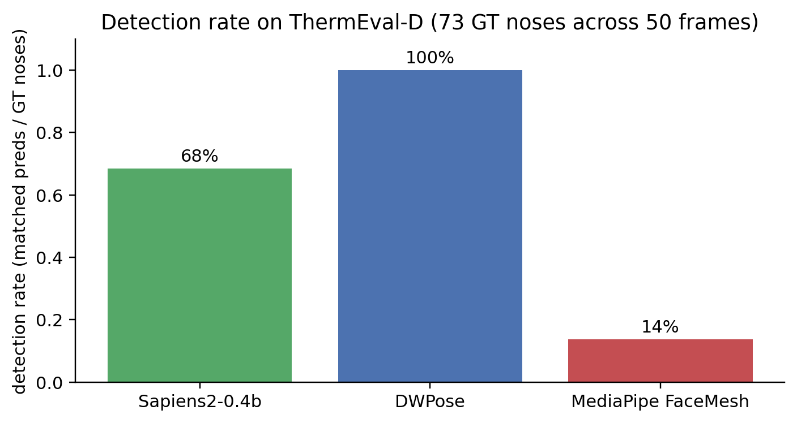

Part 1 showed that off-the-shelf RGB-trained models give a wide spread on the ThermEval-D benchmark: DWPose hits 99% PCK@10px while MediaPipe FaceMesh only finds 14% of GT noses. Part 3 showed that the canonical fix (hierarchical face → nostril) doesn’t help on real thermal scenes, because the failure isn’t “face too small” — it’s “face too thermal-textured for an RGB-trained landmarker”.
This post argues that the residual gap is partly an information problem in the thermal modality itself, and proposes four concrete routes around it. It is part 4 of the thermal nostril series (parts 1, 2, and 3 cover off-the-shelf benchmarking, few-shot finetuning, and hierarchical detection respectively).
The information problem
A nostril keypoint is a specific anatomical point — the lateral edge of the nasal alae. On an RGB face there are multiple co-located cues that pin it down:
- Tonal boundary between skin and the opening of the nostril, which is darker because it’s a small cavity.
- Specular highlight on the convex side of the alae from any directional light source.
- Skin micro-texture (pores, lashes near the nose root) that gives the model a stable local descriptor.
- Colour cue — the inside of the nostril is often a different chromaticity (more red) from the surrounding skin.
A pretrained model has implicitly learned to combine these. Remove them all and you are left with thermal — where the signal is temperature, and where the dominant cue for a nostril is:
A small region that is several degrees cooler than the surrounding skin during inhalation, and warmer than the surrounding skin during exhalation.
That description has two problems.
Problem 1 — Thermal nostrils look like every other small cool spot
A nostril on thermal looks like a small low-intensity blob ~5-10 px across. On a 192×256 ThermEval-D frame, so does:
- The mouth opening (especially when relaxed-open).
- The eyebrow shadow line in some subjects.
- A small bead of sweat that has just evaporated and cooled the skin underneath.
- The inside of the ear canal.
- A patch where the subject leant against a cool surface 30 seconds earlier (heat dissipation lag).
- Any small distractor in the background that happens to be cool — a USB-C port, a coffee mug, a dark interior of a half-open door.
The model has no photometric way to distinguish these cases. This is consistent with what part 1 observed: MediaPipe FaceMesh, when it does find a face on ThermEval, puts its alae-centre prediction roughly in the right region — but its sub-pixel localisation has nothing to anchor on.
The fundamental ambiguity: in a single thermal frame, “small cool blob within face region” does not uniquely identify nostrils.
Problem 2 — The signal is temporal, not spatial
In a single thermal frame, both nostrils are often almost-invisible (especially mid-breath, when temperature has equalised). The cue that makes nostrils stand out — the periodic warm-cool oscillation as a subject breathes — only exists across time.
This means single-frame thermal models are fundamentally working against the modality. A static thermal frame of a sleeping subject has almost no information about where the nostrils are until you compare it to a frame 2 seconds later.
Problem 3 — Resolution and scale
ThermEval-D is captured at 192×256 — typical for a TOPDON TC001+ thermographic camera at a 1–2 m distance. At this resolution, a single nostril is 1-3 pixels wide. That’s right at or below the spatial-feature scale that most ViT-style backbones can resolve (Sapiens2 ViT patches are 14-16 px; MediaPipe FaceMesh is trained on ~256-px faces where each alae is ~10 px). The 1-pixel nostril on a 192×256 thermal frame is below all of these.
Why the bake-off looked the way it did
Bringing this back to the actual experimental results:

- DWPose’s 100% detection isn’t because it understands thermal faces. It’s because its YOLOX person detector localises bodies, which are high-contrast against the room background on thermal. From the body bbox, the wholebody-keypoint head infers nose position based on body geometry (the nose is at a known position relative to the shoulders, neck, and eyes — none of which need fine-grained texture cues to find).
- Sapiens2’s 69% is single-person inference, not a failure mode. Its default driver picks one face per frame. The faces it picks, it nails (2 px median). Add a multi-person detector upstream and the gap closes.
- MediaPipe’s 14% is fundamental. Its built-in BlazeFace short-range is tuned for selfie-distance RGB faces, and below ~50 px face / sub-pixel skin texture, there is no signal it can use.
In short: the winners are the models that DON’T rely on facial texture. They rely on body geometry (DWPose) or anatomical landmark templates (Sapiens2). The model that does rely on facial texture (MediaPipe) fails twice — once on detection, once on landmark localisation. This is the same finding part 3 reaches from a different angle: even with a perfect upstream face crop, MediaPipe FaceMesh still rejects most thermal-textured inputs.
Four ways forward
Fix 1 — Lean harder on anatomical priors (hierarchical detection, refined)
The hierarchical principle from part 3 is still the right framework — coarse landmarks first, fine landmarks next — but on thermal, the per-stage primitives must change:
- Detect the body (this works on thermal — body silhouette has high contrast against the room).
- Detect the head as the top of the body — geometric constraint, no texture needed.
- Detect the eyes within the head — periorbital region is the hottest part of the face on thermal, ~3 K above surrounding skin (well above sensor noise).
- Constrain the nose to lie midway between the eyes, at roughly 1/3 of the face’s vertical extent below the eye line.
- Only inside that 10×15 px region, find the two coolest local minima — those are the nostrils.
DWPose already does steps 1-3 implicitly (its YOLOX-then-RTMPose cascade), which is exactly why it wins on ThermEval-D. Steps 4-5 would refine its sub-pixel accuracy further.
Fix 2 — Project labels from paired RGB → thermal
Datasets like SF-TL54 and TFD68 include paired RGB frames captured by a co-mounted RGB sensor with known extrinsic calibration. The RGB frame is where MediaPipe / Sapiens2 etc. work reliably.
paired_rgb -> MediaPipe FaceMesh -> 478 RGB landmarks
|
v
extrinsic homography (RGB cam -> thermal cam)
|
v
-> 478 *thermal-coordinate* landmarks (free GT)If the two cameras are aligned to within a few pixels — a calibration that takes 20 minutes with a checkerboard target — you get labelled thermal frames for free, at the rate your RGB camera produces them. This is exactly what TFD68 (SIGGRAPH Asia 2025) did to scale to 28k annotated thermal images.
ThermEval-D doesn’t ship paired RGB, but the ThermEval source capture setup includes both an RGB camera and the TC001+ thermal — adding paired-RGB projection to ThermEval is a natural extension.
Fix 3 — Pretrain on synthetic thermal (T-FAKE)
The T-FAKE dataset generates 100k synthetic thermal faces from a parametric head model, with known nostril positions in the thermal frame. The synthetic-to-real gap on thermal is much smaller than on RGB (no chromatic information to mismatch, no specular highlights to model wrong). A model pretrained on T-FAKE and finetuned on ~50 real thermal frames substantially outperforms one trained from scratch on either alone.
This is the most data-efficient route in practical terms — the synthetic data is free, the small real set is what makes the predictions calibrated.
Fix 4 — Use breath-rate as self-supervision
The most interesting route in my view. The whole reason to localise nostrils on thermal is to measure the temperature oscillation — that periodic signal is the entire pipeline output. So:
- Run a coarse face detector to localise the head region (DWPose’s body-driven approach works fine).
- For every pixel inside the face region, compute the temporal FFT magnitude in the 0.1–0.4 Hz band (the breathing-rate band).
- The pixels with the strongest periodicity in that band are the nostrils, by definition.
This is “annotate the data the way you would have measured it anyway”. No GT clicks, no synthetic data, no paired RGB needed — just a 10-second clip of the subject breathing. Add this as a self-supervised loss on top of whatever spatial model you train, and you get a model that is biased toward landmarks that are physically meaningful for the downstream task rather than landmarks that are visually salient on a static frame.
The downside: requires video, not single frames. The upside: video is what you’d be processing anyway for breath-rate monitoring, so the cost is zero relative to the deployment scenario. ThermEval-D is single-frame, so this fix can’t be tested on that dataset — but a thermal video dataset like SLP (in-bed sleep monitoring) would be the right testbed.
What I’d reach for first in practice
If I had to ship a thermal-nostril detector tomorrow, on top of the part 1 findings:
| Constraint | Pick | Why |
|---|---|---|
| Real-world multi-person, no labels | DWPose | Already at 100% detection / 3 px median on ThermEval-D. |
| 30 labelled crops, need a specific anatomical convention | Finetune a tiny head on Sapiens2 backbone (part 2) | Pins the prediction to your annotation convention; distillable. |
| Paired thermal + RGB streams available | Project from RGB MediaPipe + use thermal-only model for failure cases | Free labels, lowest engineering cost. |
| Need actual breath-rate signal (the real downstream task) | Temporal FFT band-pass on face-region pixels | Avoids the localisation problem entirely. |
The four fixes are not mutually exclusive. The strongest single-frame pipeline almost certainly combines (1) anatomical-prior hierarchical detection with (3) T-FAKE synthetic pretraining + a small fraction of (2) paired-RGB labels for real-domain calibration. Add (4) on top during deployment when you have video.
What this post is not doing
I haven’t measured any of the four fixes here — this is a framework for thinking about the problem, informed by the experimental findings in parts 1 and 3 that off-the-shelf RGB-trained landmarkers fail on real-world thermal. The thermal sleep-posture follow-up (separate post) will be where I actually test some of these (especially fix 4 — temporal/breath-signal self-supervision needs video).
Links
- Part 1 of this series: the bake-off on ThermEval-D
- Part 2: Sapiens2 finetune on ThermEval-D
- Part 3: hierarchical face → nostril on ThermEval-D
- T-FAKE synthetic thermal: arXiv:2408.15127
- TFD68 paired-projection annotations: SIGGRAPH Asia 2025
- ThermEval-D dataset: Kaggle · project page